يظن بعض الناس أن إنشاء المواقع عملية صعبة معقدة، وهذا ليس صحيحاً، فيمكن للجميع تعلم كيفية إنشاء المواقع. الهدف من هذا الدرس هو مقدمة سهلة في كيفية إنشاء المواقع، وهذا الدرس لا يتطلب أي معرفة مسبقة منك عن البرمجة أو تطوير المواقع.
هي اللغة المستخدمة في إنشاء وتصميم صفحات الويب.
اخترعت HTML في عام 1991م من قبل عالم يسمى تيم بيرنرزلي، الهدف من هذه اللغة هو تبسيط عملية وصول العلماء في جامعات مختلفة إلى البحوث التي ينشرونها. المشروع نجح بشكل لم يتصوره تيم بيرنرزلي، فباختراعه HTML قام تيم بيرنرزلي بوضع أساس شبكة الويب كما نعرفها اليوم.
هي لغة تسمح بعرض المعلومات (مثال: البحوث العلمية) على شبكة الإنترنت، وهذا ما نراه عند زيارتنا لأي صفحة في الشبكة.
كلمة HTML هي اختصار "HyperText Markup Language"،
تكتب ملفات HTML في صورة ملفات نصوص بسيطة (Text)، تأخذ الامتداد .html عادة، وتكتب في أي برنامج للنصوص البسيطة، في الويندوز نستخدم Notepad++.
لغة HTML لغة وصفية سهلة جداً ذات قدرات عالية وميزات فريدة وقوية، جميع الصفحات العالمية متقنة التصميم تم إعدادها باستخدام لغة HTML، وتتميز HTML أيضاً بأنها ذات قواعد سهلة ومعروفة.
شبكة المنهل التعليمية http://111000.net/wdesign/?start=30
تتكون ملفات HTML من قسمين:
الوسوم (Tags) هي الأجزاء التي تحدد وتصف المحتوى من حيث التنسيق. الوسوم هي توصيفات نستخدمها ونضعها في بداية العنصر وعند نهايته. كل الوسوم لها نفس الشكل، تبدأ مع علامة أصغر من "<" وتنتهي مع علامة أكبر من ">".
<html> .............................................</html>
بشكل عام هناك نوعان من الوسوم، وسم البداية مثلاً: <html> ثم وسم الإغلاق </html>. الفرق بين الاثنين هو علامة "/"، وتوصيف المحتوى يكون بوضعه بين وسم البداية ووسم الإغلاق.
بعض الأمثلة:
الوسم em هو اختصار لكلمة "emphasis"، أو الوسم i، يجعل النص "مائلاً"، وكل النصوص بين وسم البداية <em> ووسم الإغلاق </em> ستظهر بشكل مائل في المتصفح.
<em>نص مائل</em>
الوسم b هو اختصار لكلمة Bold أو الوسم strong للخط العريض، ويأتي في صورة زوج من الوسوم، وسم للفتح ووسم للإغلاق.
HTML is a <b>Great</b> Language
وعند استخدام المتصفح في مشاهدة السطر سيظهر هكذا:
سيظهر بهذا الشكل في المتصفح: HTML is a Great Language
يتكون ملف HTML من جزئيين رئيسيين هما:
</body>
</html>
المثال التالي يبين كيفية تقسيم ملف HTML:

الأجزاء التابعة للرأس توضع بين الوسمين <head> و</head>، أما الأجزاء التابعة للجسم فتوضع بين الوسمين <body> و</body>.
يتم تحديد عنوان المستند الذي يظهر في شريط العنوان للمتصفح بإحاطته بالوسمين <title> و</title>، والمكان الصحيح لوسم الـ title هو الرأس، حيث أن الوسم title لا يعتبر من ضمن محتوى الصفحة ولا يظهر في الصفحة، وهو يستخدم في عمليات البحث والأرشيف كما في محركات البحث.
العناوين: وهي من ستة مستويات، العنوان الأول h1 والثاني h2 وهكذا حتى h6.
<h1>المستوى 1</h1> <h2>المستوى 2</h2> <h3>المستوى 3</h3> <h4>المستوى 4</h4> <h5>المستوى 5</h5> <h6>المستوى 6</h6>
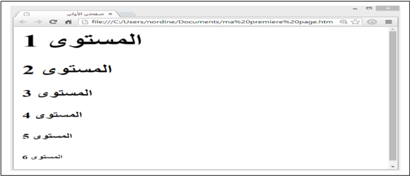
<p>Paragraph Text</p>
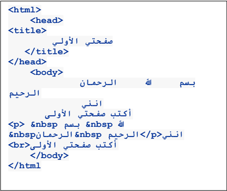
تحديد الفقرات:
يتم إحاطة الفقرة بالوسم:
P

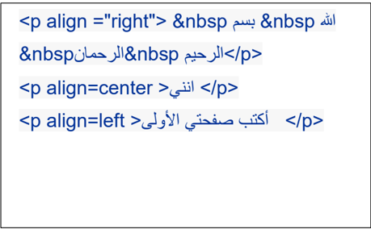

يستعمل الوسم <font> دائماً مع مجموعة من الخصائص، فهو لا يمتلك أي تأثير لوحده، وأهم خصائصه هي التي تحدد نوع الخط ولونه وحجمه.
الخاصية face: تحدد نوع الخط المستخدم:
<font face="Arial">هذا ملف html</font><br>
<font face="Courier New">هذا ملف html</font><br>
<font face="andalus">هذا ملف html</font>

الخاصية color: تستخدم لتحديد لون الخط (انظر إلى الألوان في الأسفل):
هذه الكلمة <font color="red">حمراء</font> وهذه <font color="blue">زرقاء</font>
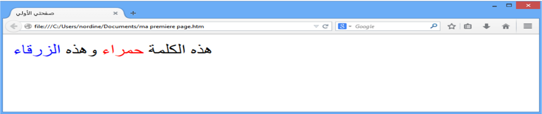
الخاصية size: تستخدم لتحديد حجم الخط.
توجد سبعة أحجام للخط، والخط الأساسي في الصفحة يأخذ أحد هذه الأحجام، وإذا أردنا تغيير حجم الخط في كلمة معينة أو جزء ما من النص، نستخدم الوسم font مع الخاصية size لزيادة حجم الخط أو إنقاصه بمقدار معين.


توجد أيضاً طريقة سريعة لتكبير الخط خطوة واحدة أو تصغيره خطوة واحدة، باستخدام الوسم <big> أو <small>.
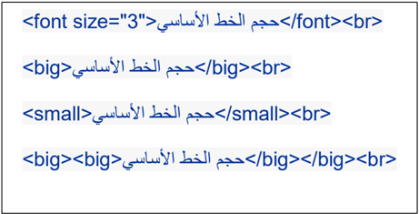

يمكننا كذلك تغيير حجم الخط الأساسي في المستند، وهذا سيؤثر على جميع الأماكن التي استخدمت فيها الأحجام النسبية للخطوط.
نغير الخط الأساسي باستخدام وسم يدعى basefont، ويمكن استخدامه لتغيير حجم الخط الأساسي في المستند ولونه ونوعه، وهو لا يأخذ قيماً نسبية في الحجم.
لتغيير الخط الأساسي إلى Arial بحجم 3 ولون أخضر، نضع السطر التالي في المستند:
<basefont color="Green" size="3" face="Arial">
والوسم basefont لا يستخدم في جزء محدد من نصوص HTML، بل يظهر تأثيره في الصفحة كلها، لذلك فهو لا يحتاج إلى وسم إغلاق.
<hr> وهو وسم خاص لوضع الخط الأفقييمكننا تحديد عرض الخط بالخاصية width، حيث تأخذ width قيماً مطلقة مثل 11 أو 293 وهي تحدد العرض بالبكسل، أو قيماً نسبية تقاس بالنسبة إلى عرض الصفحة، مثل 21% و55%.
توجد أيضاً خاصية وهي size التي تحدد ارتفاع الخط رأسياً، وتأخذ قيماً مطلقة صغيرة.
توجد أيضاً خاصية color لتحديد لون الخط.
توجد أيضاً الخاصية noshade وهي خاصية بدون قيمة، وعند وضعها تجعل الخط يبدو مصمتاً وليس منحوتاً كما في الحالة القياسية.
<hr><hr color="red"><hr color="Purple" size="8"><hr width="30%"><hr noshade size="20">
يمكن أيضاً استخدام بعض المتغيرات في وسم الجسم body، وهذه المتغيرات تستخدم في تحديد تنسيق الصفحة:

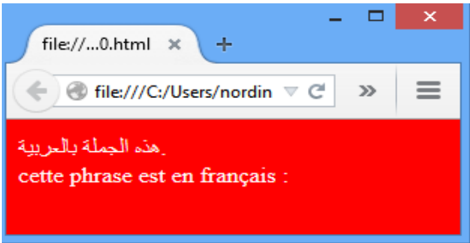
disc، circle
يمكننا تنظيم المحتوى في لغة HTML في عدة أشكال، مثلاً وضعه في صورة قائمة مرتبة، أو في صورة شجرة (مخطط هرمي).
يمكننا إنجاز قائمة مرتبة بالتعداد الرقمي باستخدام الوسم ol وهي اختصار "ordered list"، وقائمة غير مرتبة بالتعداد النقطي باستخدام الوسم ul وهي اختصار "unordered list"، بحيث توضع البنود بينهما، وكل بند يحدد بالوسم li وهي اختصار "list item".
يمكننا تحديد نوع الترقيم في القوائم المرتبة بالحروف أو بالأرقام العربية أو الرومانية وغيرها عبر الخاصية type، وتأخذ أحد القيم التالية:
1, 2, 3, 4, ... : أرقام عادية
a, b, c, d, ... : أحرف صغيرة
A, B, C, D, ... : أحرف كبيرة
i, ii, iii, iv, ... : أرقام رومانية صغيرة
I, II, III, IV, ... : أرقام رومانية كبيرة
وفي القوائم غير المرتبة: disc، circle، square.
ويمكننا وضع قائمة داخل قائمة لتشكيل المخططات الهرمية.
مثال:


يمكننا في لغة HTML عرض الصور في الصفحات والتحكم في خواصها.
يجب أن تكون الصورة جاهزة للنشر على الويب، أي أن لا تكون ذات حجم كبير لأن ذلك سيؤدي إلى بطء شديد في التحميل، لذلك يفضل التقليل من الصور قدر الإمكان في صفحات HTML.
لكي نستطيع عرض الصور في المستند، يجب أن تكون الصورة من النوع JPEG أو GIF أو PNG.
يتم إدراج الصور في صفحة HTML عن طريق الوسم IMG، وهو وسم مفرد (لا يحتاج إلى وسم إغلاق)، وهذا الوسم يحتاج إلى خاصية مهمة لكي يعمل بشكل سليم وهي src اختصار لكلمة source، والتي نضع بها عنوان الصورة المطلوبة:
<img src="velo.jpg">
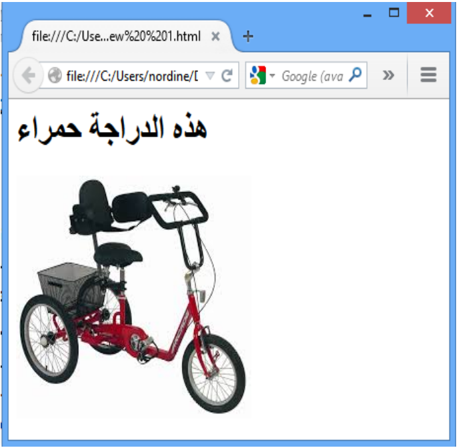

الخاصية width تستعمل لتحديد عرض الصورة، والخاصية height لتحديد ارتفاع الصورة. يمكن بواسطة الخاصيتين السابقتين تكبير الصورة وتصغيرها حسب المطلوب، وإذا كنت تريد إظهارها بالحجم الطبيعي فيمكنك ترك هذه الخصائص.


وهي خاصية مهمة جداً في الصور، وتنبع أهميتها من كونها الطريقة الوحيدة للتحكم بكيفية عرض الصورة بالنسبة للنصوص المحيطة بها، حيث أن الصور في HTML تعتبر جزءاً من النص المحيط بها، تتحرك معه وترتبط به.
تأخذ align العديد من القيم وهي:
<img src="velo.gif" align="bottom"><img src="velo.gif" align="left"><img src="velo.gif" align="middle"><img src="velo.gif" align="right"><img src="velo.gif" align="top">تعد الارتباطات التشعبية من أهم مكونات صفحة الويب، لأنها هي المسؤولة عن ربط مجموعة من صفحات الويب المختلفة بينها، مما يتيح للمستخدم التنقل عبرها بسهولة.
لإنجاز وصلة نستخدم الوسم a وهي اختصار لكلمة anchor، وهي لا تعمل لوحدها ولكن تتطلب خصائص معينة، من أهمها الخاصية href وهي اختصار "hypertext reference"، لتحديد الوجهة.
<a href="http://www.microsoft.com/">Microsoft Corp.</a><br>
<a href="http://www.microsoft.com/">cliquer ici.</a><br>
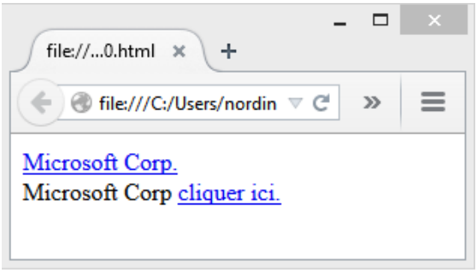
يمكننا إدراج صورة أو زر كبديل عن الكلمات:
<a href="http://www.microsoft.com/"><img src="new.gif"></a><br>
<a href="صفحتي.htm">الصفحة الأولى</a><br>
<a href="velo.gif"><img src="velo.gif">انقر على الصورة</a><br>
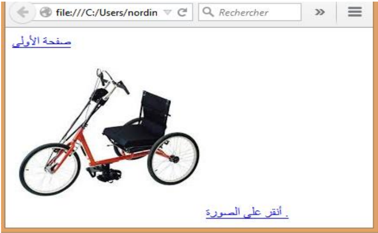
<a href="mailto:nordine@hotmail.com">Mon E-mail</a>
بإمكاننا إنشاء روابط داخلية ضمن الصفحة، كل ما تحتاجه هي خاصية تسمى id أو "identification"، والعلامة "#".
استخدم خاصية id لتضع إشارة للعنصر الذي تريد وضع رابط له، مثال:
<p><a href="#heading1">انتقل إلى العنوان رقم 1</a></p>
<p><a href="#heading2">انتقل إلى العنوان رقم 2</a></p>
<h1 id="heading1">العنوان رقم 1</h1>
<p>نص... نص... نص...</p>
<h1 id="heading2">العنوان رقم 2</h1>
<p>نص... نص... نص...</p>
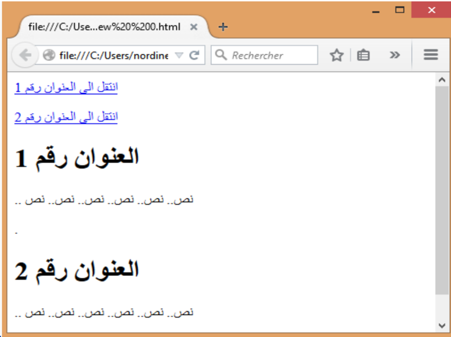
تعتبر الجداول من أهم مكونات صفحات HTML، وجميع التصاميم الاحترافية تستفيد من الجداول لتصميم الصفحة وتوزيع الكائنات عليها وتشكيلها في القالب الذي يريدونه.
يتم إدراج الجدول بالوسم <table>، وداخل الجدول يجب إدراج صفوف باستخدام الوسم <tr> وتعني "table row"، وداخل الصفوف توجد البيانات بالوسم <td> وهو اختصار "table data"، وهذا الوسم يبدأ وينهي كل خلية في صفوف الجدول.
يمكن وضع إطار للجدول بالخاصية border، حيث نحدد فيها سماكة الإطار المطلوب. القيمة الافتراضية للإطار هي 0 أي بدون إطار.
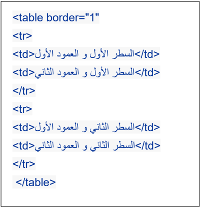

يمكننا التحكم بالمسافة بين الخلايا بواسطة الخاصية cellspacing، والمسافة بين الحدود الداخلية للخلايا ومحتوياتها بواسطة الخاصية cellpadding:
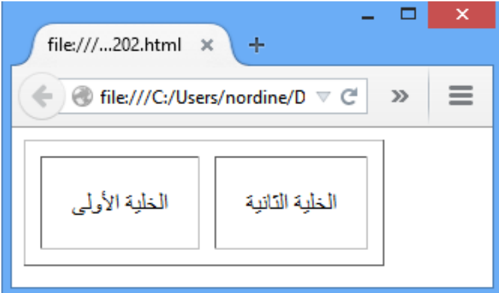
<table cellspacing="10" cellpadding="20" border="1">
<tr>
<td>الخلية الأولى</td>
<td>الخلية الثانية</td>
</tr>
</table>
يمكن التحكم بعرض الجدول بالخاصية width وارتفاعه بالخاصية height، وكلاهما يأخذ قيماً مطلقة أو نسباً مئوية، ويمكن استخدام هذه الخصائص في الخلايا td أيضاً:
<table width="100%" height="100%" border="1">
<tr>
<td width="100" height="40%">الخلية الأولى</td>
<td width="100%" height="40%">الخلية الثانية</td>
</tr>
</table>
يمكن استعمال هذه الخواص في الخلايا td أيضاً، وعند تعيين قيمة bgcolor للجدول مختلفة عن قيمة أحد الخلايا، فإن لون الخلية سيطغى على لون الجدول في تلك الخلية، لأن الخلية موجودة فوق الجدول في ترتيب الطبقات:
<table border="1" width="90%" height="80%">
<tr>
<td bgcolor="Yellow">الخلية الأولى</td>
<td>الخلية الثانية</td>
</tr>
</table>

يمكن التحكم بمحاذاة محتوى الخلية أفقياً بالخاصية align.
في الخاصية align، القيمة left تعني محاذاة لليسار، وright لليمين، وcenter للمنتصف، وjustify للضبط الكلي الذي يجعل الأسطر متساوية في الطول.
يمكن التحكم بمحاذاة محتوى الخلية رأسياً بالخاصية valign.
في الخاصية valign، تأخذ القيمة top للأعلى، وbottom للأسفل.